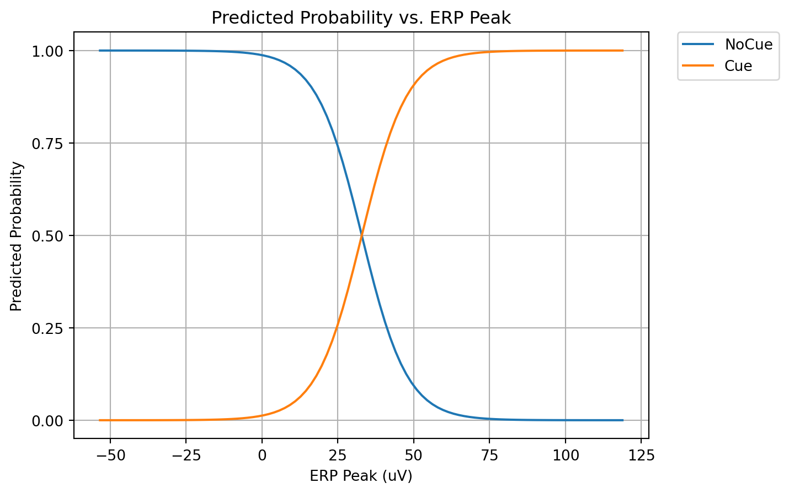
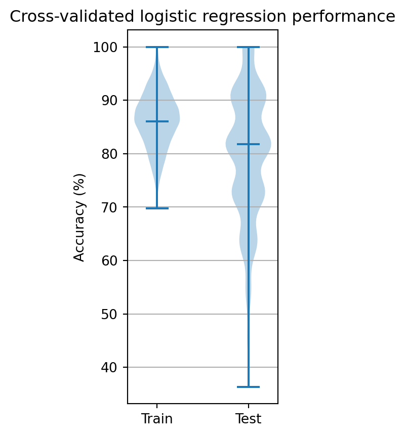

import os
import json
import numpy as np
import pandas as pd
import matplotlib.pyplot as plt
from sklearn.linear_model import LogisticRegression
from sklearn.metrics import balanced_accuracy_score, confusion_matrix, ConfusionMatrixDisplay
from sklearn.model_selection import KFold, StratifiedKFold
import sys
sys.path.append('..')
from source.loaders import EEG, remove_baseline_drift, remove_emg, remove_ac, detect_blinksWeek3
Introduction to Classification with Logistic Regression
Last week we established that the neural response to stimulus presentation produces a stereotyped pattern of electrical activity on the scalp, referred to as an event-related potential (ERP). This was determined by taking the times when a stimulus was presented and calculating the average EEG activity around that time. Since we know when the stimuli are presented, determining how the brain responds is fairly straight forward. What is not straight forward is going back the other direction: given the neural activity can we determine whether a stimulus was presented? This is the essential problem of BCI, and the one we will solve. And solving it for this case unlocks a host of new possibilities that. The approach developed this week can be elaborated to solve wide variety of brain activity decoding problems. It opens up the possibility to decode the identity of the presented stimulus, or a subject’s intended action. This is as close to mind-reading as one can get. Let’s get to work.
What we will cover
The overarching goal of this week is to introduce simple logistic regression models, where a single feature derived from neural data (ERP strength) is used to predict a single predictor (stimulus present or absent). To start we will discuss different ways to quantify the strength of an ERP. We will also weigh the advantages and disadvantages of different approaches to extract time periods from the recording that lack stimuli. Then logistic regression will be introduced and we will cover how to apply it using the scikit-learn python package. Lastly, we will discuss some of general issues that arise in machine learning algorithms like logistic regression.
Quantification of ERP strength
ERPs have complex waveforms that can last a couple hundred milliseconds. With a sample rate of 500 Hz, that means we will have around 100 samples of neural data to work with when trying to determine whether a stimulus was present or not. You could imagine being given a set of waveforms, some from trials with a stimulus and others without, and trying to determine which was which. One strategy is to calculate a feature of the waveform related to the presence of the ERP, and if that feature exceeds a certain value then the ERP is deemed present on that trial.
Loading EEG data from stored Numpy arrays
As a starting point, we will use the data set we worked with last week. An auditory cue was given about every 8 seconds, and there was a robust ERP elicited over occipital and parietal EEG sites. We will select those epochs when we know a cue was presented, and an equal number of epochs where we know a cue was not delivered. To start, we need to load the data.
Last week we created an EEG class that interfaced with the EEG data, along with preprocessing functions to remove noise or detect eye blinks. We will reuse them here to quickly get us back to where we left off last week.
# create file paths
subj = 'sub-AB58'
evt_dir = ['data', 'eeg', 'ds003690', subj, 'eeg', '{}_task-passive_run-1_events.tsv'.format(subj)]
evt_path = os.path.join(*evt_dir)
data_dir = ['data', 'eeg', 'ds003690', subj, 'eeg', '{}_task-passive_run-1_eeg.set'.format(subj)]
eeg_path = os.path.join(*data_dir)
chan_dir = ['data', 'eeg', 'ds003690', subj, 'eeg', '{}_task-passive_run-1_channels.tsv'.format(subj)]
chan_path = os.path.join(*chan_dir)
# load data
eeg = EEG(eeg_path, chan_path)
events = pd.read_csv(evt_path, sep='\t')
# preprocess data
remove_baseline_drift(eeg)
remove_emg(eeg)
remove_ac(eeg, ac_freq=50)
blinks = detect_blinks(eeg)[0] # indexing the call to the function allows us to select the output we want
cues = events['onset'][events['trial_type'] == 'cue'].valuesExtracting non-stimulus times
To compare stimulus and non-stimulus periods, we need to select times when the stimulus did not occur. At first glance, this seems like a trivial task. Given the list of stimulus times, we can just create a new list by hand that does not include any of those times. However, we might unintentionally incorporate biases in our list creation. In addition, we want to avoid periods with blinks, because we exclude those periods from our ERP construction. This means we have to avoid two sets of conditions. But worst of all, we would have to create a new list for each recording session, which is tedious. We program to avoid tedium, so lets explore ways to automate this step.
The approach we devise to create no cue times should satisfy a few conditions:
- The cue should not be present
- No eye blinks should be present
- No systematic temporal relationship with cue delivery
- No-cue epochs should have similar properties to cue epochs, such as:
- Occur during the same period of the recording
- Similar relative timing
But first, we will get the cue times that did not overlap with eye blinks.
# Function that returns cues without blinks
excl_blink = 0.6 # seconds, exclusion period surrounding a blink
rem_blinks = lambda c,b: np.array([ci for ci in c if not any(np.abs(ci-b) < excl_blink)])
# keep those cues that are not within the blink exclusion period
cues_nob = rem_blinks(cues, blinks)The same function should also be used with the non-stimulus times we will generate. We want the no-cue times we create to be as similar as possible to the times when cues were presented. If we are excluding cues that were near eye blinks, then we have to do the same for the no-cue periods. If we do not, then the cue and no-cue times will differ in whether an eye blink was present, which our algorithm could potentially pick up on to distinguish between them.
To ensure that our no-cue periods do not come close to the cue periods, we could set the no-cue times to be at a fixed time before each cue. If that time is greater than the post-window, and far enough from the previous cue time to ensure that it does not overlap with its ERP, this might work. This strategy would be questionable if the ITIs were at a fixed interval, because then there would be a systematic relationship between the cue times and no-cue times. But because they are random, that means the previous cue time will be random, plus or minus a second, with respect to the no-cue time.
# fixed time before cue method
# fixed time should be less than the shortest iti minus the window.
fixed_time = 4 # half of the mean ITI
nocues_fixed = cues-fixed_time
nocues_fixed_nob = rem_blinks(nocues_fixed, blinks)
def plot_nocues(ax, nocues_orig, nocues_rem, cues):
"""Plot no-cue times, with cues and cut no-cue times overlaid
Parameters
----------
ax : matplotlib.axes.Axes
Axes to plot on
nocues_orig : numpy.ndarray
Original no-cue times
nocues_rem : numpy.ndarray
No-cue times with blinks removed
cues : numpy.ndarray
Cue times
"""
ax.vlines(cues, colors='k', ymin=-1, ymax=2, alpha=0.2) # cue times
ax.eventplot(nocues_rem, colors='b') # no-cue times
nocues_cut = np.setdiff1d(nocues_orig, nocues_rem) # cut no-cue times
for nocue_cut in nocues_cut:
ax.text(nocue_cut, 1, 'X', fontsize=20, color='r', ha='center', va='center')
ax.set_ylim(0, 2)
ax.set_yticks([])
ax.set_xlabel('Time (s)')
# plot permuted no-cue times
fig, ax = plt.subplots(figsize=(10, 2))
plot_nocues(ax, nocues_fixed, nocues_fixed_nob, cues)
ax.set_title('Fixed offset no-cue times')Text(0.5, 1.0, 'Fixed offset no-cue times')We created a custom plotting function to see how our event times for the cue and no-cue periods related to each other. In it vertical lines are the times when cues were presented, blue hatch marks are when valid random no-cue times occur, and red ’X’s are the no-cue times that were eliminated due to overlapping with a cue or blink. Using times at a fixed interval before cue delivery looks good. Our no-cue periods are consistently far away from the cues and have a similar distribution as the cues across the session. We will use these times to get our no-cue epochs.
Some flawed approaches to selecting non-cued periods
There are a variety of strategies for choosing the times when no stimuli are present that should meet the criteria listed above. Here we will explore a couple that seem like good ideas, but upon closer examination exhibit flaws.
Since these approaches will generate no-cue times that do not have a prespecified fixed offset from the cue times, we need to exclude those times near a cue. For this, we will create a similar function to the one that removed times close to blinks (rem_blinks), but use a tighter exclusion period because of the tight temporal relationship between cue delivery and the ERP.
# create version outside cue period
excl_cue = 0.1 # seconds, exclusion period around cue
rem_cues = lambda nc,c: np.array([nci for nci in nc if not any(np.abs(nci-c) < excl_cue)])Random strategy
For this approach, we will create a list of times using a random number generator. The random times we generate cannot have their window times extend past the beginning or end of the recording, nor overlap with blink period or cue periods. We will use a fixed random seed when generating these times to ensure consistency across runs.
# set random seed, ensures consistent results across runs
np.random.seed(47)
# random times between 0 and recording duration
rec_dur = eeg.data.shape[1]/eeg.srate # (number of samples / sample rate) gives time in seconds
cue_num = len(cues) # number of cues
nocues_rand = np.random.uniform(1, rec_dur-1, cue_num)
nocues_rand_nbc = rem_cues(rem_blinks(nocues_rand, blinks), cues)We use the random.uniform random number generator in numpy to get as many times as we have cues (cue_num), and restricted to times from the first till the last second of the recording session. Those times that overlap with cues or blinks are then removed, leaving a list of no-cue times that we can use. A good way to establish that the criteria for our no cue periods are followed is to plot the no-cue times overlaid on top of the cue times.
fig, ax = plt.subplots(figsize=(10, 2))
plot_nocues(ax, nocues_rand, nocues_rand_nbc, cues)
ax.set_title('Random no-cue times')Text(0.5, 1.0, 'Random no-cue times')If we compare the cue and no-cue times, it is apparent that the fourth criterion for good no-cue times is violated. One problem is that we have several no-cue times that occur outside the time period when the cue times were delivered (notice the two at the beginning and four at the end.) The other problem is that no-cue times are distributed unevenly, unlike the cues which are evenly spread across the recording session.
Permutation strategy
If we want to have the no-cue times have a similar distribution across the session as the cue times, we could generate random times but ensure that they have the same spacing between cues. One way to do this is to get a list of times between cue trials (inter-trial intervals, ITIs), shuffle those intervals, and then create a new list of times by adding them together one at a time. This strategy works because the times between cues are randomly generated, varying between 7 and 9 seconds.
# set random seed, ensures consistent results across runs
np.random.seed(45)
# Calculate ITI times
# Note, we repeat the first ITI time so that when we sum the ITIs
# we get the correct number of trials
iti_times = np.insert(np.diff(cues), 0, cues[1]-cues[0])
# randomly shuffle the iti_times
iti_times = np.random.permutation(iti_times)
# get no-cue times by summing the iti_times.
# cumsum adds each element of the array to the previous element,
# returning an array of the same size
nocues_perm = np.cumsum(iti_times)
# remove no-cue times that overlapped with cue times and blinks
nocues_perm_nbc = rem_cues(rem_blinks(nocues_perm, blinks), cues)
# plot permuted no-cue times
fig, ax = plt.subplots(figsize=(10, 2))
plot_nocues(ax, nocues_perm, nocues_perm_nbc, cues)
ax.set_title('Permuted no-cue times')Text(0.5, 1.0, 'Permuted no-cue times')This looks much better than the purely random strategy. The no-cue times are during the same period when cues were presented, and have similar relative timing. However, they appear to sometimes overlap quite closely for runs of several trials with the cue times.
Extracting EEG epochs
Last week we covered extracting EEG epochs, so we will only lightly reprise this here. This time we need one set of epochs centered on the cue times, and another on the no-cue times. We can use the get_data method in our eeg object to extract the EEG data around these times. Each will be a 3-D numpy array, where time is on axis 0, channel is axis 1, and trial on axis 2. Instead of using all channels, we will focus only on a channel were the cue ERP was strong, O1.
# time window edges
pre_win = 0.1 # time to sample before the cue
post_win = 0.5 # time to sample after the end
epoch_dur = pre_win+post_win # duration of an epoch
sel_chan = 'O1'
# get cue epochs
cue_starts = cues_nob - pre_win
cue_epochs, t_erp, _ = eeg.get_data(chans=sel_chan, start_t=cue_starts, dur_t=epoch_dur, scale='relative')
# get no-cue epochs
nocue_starts = nocues_fixed_nob - pre_win
nocue_epochs, _, _ = eeg.get_data(chans=sel_chan, start_t=nocue_starts, dur_t=epoch_dur, scale='relative')
# correct the relative time stamps to account for the pre_win period
t_erp -= pre_winSince we only loaded one channel, our channel axis (axis 1) only has a length of 1. This ‘singleton’ dimension is useless for our purposes and so to make things easier we will remove it using the numpy squeeze function.
print('The original shape of the cue_starts array is: {}'.format(cue_epochs.shape))
cue_epochs = np.squeeze(cue_epochs)
print('The squeezed shape of the cue_starts array is: {}'.format(cue_epochs.shape))
nocue_epochs = np.squeeze(nocue_epochs)The original shape of the cue_starts array is: (300, 1, 25)
The squeezed shape of the cue_starts array is: (300, 25)Let’s plot the ERPs for the cue and no-cue epochs to make sure the ERP is only present for the cue.
# get the average ERP for each condition
cue_erp = np.mean(cue_epochs, axis=1)
nocue_erp = np.mean(nocue_epochs, axis=1)
# plot the ERPs
plt.figure(figsize=(10, 5))
plt.plot(t_erp, cue_erp, label='Cue')
plt.plot(t_erp, nocue_erp, label='No-cue')
plt.xlabel('Time (s)')
plt.ylabel('Voltage (uV)')
plt.title('Average ERP for channel ' + sel_chan)
plt.legend()So far so good. We can see that the ERP is strong for epochs centered on the cue, and non-existent for times that avoid cue presentation.
Quantifying ERP strength
The next step is to distill the complex ERP waveform into a single number that reflects its strength. There are numerous measures you can use for this, and we will explore a few. This step is known as feature engineering, wherein we try to distill multidimensional samples to a few values that capture the aspects of the sample that are relevant to our task. In this case, each sample is a collection of 300 voltage measurements, and the aspect we want to measure is the strength of the ERP. A good feature will take on values that distinguish between the cue and no cue epochs.
Voltage at ERP peak time
Since we know the shape of the ERP, we know on average where it tends to peak in value. The voltage at that time should indicate whether an ERP is present. Looking at the average ERP traces immediately above, you can see that on trials with a cue the voltage will tend to be near 10 uV at the peak time, while on no-cue trials it will tend to be near 2 uV. To get the peak voltage on each trial, we first find the time when the ERP peak occurs, then sample the voltage at that time for each epoch.
# get peak idx of cue erp
cue_peak_idx = np.argmax(cue_erp)
# return the voltages at the ERP peak time
cue_erp_peaks = cue_epochs[cue_peak_idx, :]
nocue_erp_peaks = nocue_epochs[cue_peak_idx, :]To examine how well the peak voltage distinguishes between the Cue and No-cue conditions, we can plot their distribution. The less their respective distributions overlap, the better the feature is for distinguishing between the types of trials.
# box plot of peak values for cue and nocue conditions with event plot of points on top
def plot_dist_erps(cue_vals, nocue_vals, ax=None):
"""Plot distribution of cue and no-cue ERP peak values
Parameters
----------
cue_vals : numpy.ndarray
Array of cue ERP peak values
nocue_vals : numpy.ndarray
Array of no-cue ERP peak values
ax : matplotlib.axes.Axes
Axes to plot on
"""
if ax is None:
fig, ax = plt.subplots()
# violin plot of values, with cue_vals blue and nocue_vals orange
cue_vp = ax.violinplot(cue_vals, positions=[1], showmedians=True)
for pc in cue_vp['bodies']:
pc.set_facecolor('tab:blue')
nocue_vp = ax.violinplot(nocue_vals, positions=[2], showmedians=True)
for pc in nocue_vp['bodies']:
pc.set_facecolor('tab:orange')
# plot the cue_vals and nocue_vals as points on top of the violin plot
ax.plot(np.ones(len(cue_vals)), cue_vals, '.', color='tab:blue')
ax.plot(2 * np.ones(len(nocue_vals)), nocue_vals, '.', color='tab:orange')
# set the xticks to be at 1 and 2, with labels Cue and No Cue
ax.set_xticks([1, 2])
ax.set_xticklabels(['Cue', 'No Cue'])
fig, ax = plt.subplots(figsize=(2, 4))
plot_dist_erps(cue_erp_peaks, nocue_erp_peaks, ax=ax)
plt.ylabel('Peak Amplitude (uV)')
plt.title('Peak Amplitude of Cue and No Cue Conditions')Text(0.5, 1.0, 'Peak Amplitude of Cue and No Cue Conditions')The violin plot above shows a smoothed distribution of the data points as a shaded region. The solid horizontal lines from top to bottom are the maximum, median, and minimum values. The distributions do overlap, with the median value for the No-cue condition falling within the distribution of values for the Cue. This overlap is likely because there is substantial spontaneous activity in the EEG signal that is added to our ERP peak estimate on each trial. When we got the average ERP, this spontaneous activity that was not time-locked to cue delivery canceled out because it was equally likely to be positive or negative. We can visualize this spontaneous component by plotting the EEG signal for each epoch with the ERP subtracted out. That looks like:
# subtract the mean ERP waveform from each epoch
# epochs have to be transposed, x.T, because of broadcasting rules in numpy
cue_epochs_spon = cue_epochs.T-cue_erp
nocue_epochs_spon = nocue_epochs.T-nocue_erp
# plot EEG without ERP, and distribution of values where ERP peak would be
fig, ax = plt.subplot_mosaic([['ul', 'ul', 'r'],['ll', 'll', 'r']], sharey=True)
ax['ul'].plot(t_erp, cue_epochs_spon.T, color='tab:blue', alpha=0.2)
ax['ul'].plot(t_erp, cue_erp, color='tab:blue')
ax['ul'].grid()
ax['ll'].plot(t_erp, nocue_epochs_spon.T, color='tab:orange', alpha=0.2)
ax['ll'].plot(t_erp, nocue_erp, color='tab:orange')
ax['ll'].grid()
ax['ll'].set(xlabel='Time (s)')
plot_dist_erps(cue_epochs_spon[:,cue_peak_idx], nocue_epochs_spon[:,cue_peak_idx], ax=ax['r'])
ax['r'].set_yticklabels(range(-30, 40, 10))
fig.subplots_adjust(hspace = 0)
ax['ul'].set(title='Waveforms')
ax['r'].set(title='EEG voltage at ERP peak')
fig.suptitle('Spontaneous EEG', fontsize=16)
fig.supylabel('Voltage (uV)')/var/folders/xr/cvz2q4cs7mn5n78kvjyvkb_00000gn/T/ipykernel_8892/2930109674.py:16: UserWarning:
set_ticklabels() should only be used with a fixed number of ticks, i.e. after set_ticks() or using a FixedLocator.
Text(0.02, 0.5, 'Voltage (uV)')After removing the ERP, a a great deal of variation still remains, with an amplitude on par with the ERP itself. In fact, the shape of the distribution of EEG voltages at the ERP peak time is the same as the one for the ERPs above. This is a simple consequence of the ERP peak values reflecting the sum of the mean ERP peak and the spontaneous EEG at that time. When we subtract the mean ERP peak, we are just shifting the distribution to zero. Is there any way we can account for the spontaneous EEG activity on a single trial?
Average voltage during ERP
Examining the spontaneous EEG waveforms, we see that the signal fluctuates between positive and negative values on the order of tens of milliseconds. Perhaps if we average the EEG signal over the 100 ms when the strongest ERP component is present, from 80 to 180 ms, the spontaneous activity will cancel itself out. The ERP, on the other hand, maintains positive values during that period, so it should persist despite the averaging. The logic here is similar to averaging the EEG epochs across trials, because the spontaneous voltage at each time point across epochs will randomly vary between positive and negative values. In this case, we are just applying that principle across time within a trial.
When we restrict analysis or calculation to a specific time window, that period is referred to as the region of interest (ROI). Here, our ROI will be from 80 to 180 ms post cue (or no-cue), and we will take the mean value of the EEG voltage during that time.
# get indices between 80 and 180 ms
roi_idxs = np.where((t_erp >= 0.08) & (t_erp <= 0.18))[0]
# get the mean EEG voltage during the strongest ERP component across trials for each condition
cue_erp_means = np.mean(cue_epochs[roi_idxs, :], axis=0)
nocue_erp_means = np.mean(nocue_epochs[roi_idxs, :], axis=0)
# plot mean voltages
fig, ax = plt.subplots(figsize=(2, 4))
plot_dist_erps(cue_erp_means, nocue_erp_means, ax=ax)
plt.ylabel('Mean ERP voltage (uV)')
plt.title('Mean amplitude of Cue and No Cue Conditions')Text(0.5, 1.0, 'Mean amplitude of Cue and No Cue Conditions')Well that did not work! Averaging over the period where the strongest ERP component was present diminished median peak ERP voltage for the Cue condition, making it less separable from the No-cue condition. This happens because the magnitude of the ERP varies across time, and we are averaging together periods where it is weaker. Indeed, if we calculate the mean of the ERP during our ROI:
# get mean of ERP during the ROI
erp_mean = np.mean(cue_erp[roi_idxs])
print("Mean of ERP during ROI: {:.2f}".format(erp_mean))
# get ERP voltage during its peak
erp_peak = cue_erp[cue_peak_idx]
print("ERP voltage during peak: {:.2f}".format(erp_peak))Mean of ERP during ROI: 6.63
ERP voltage during peak: 11.21We have gone from an ERP peak voltage of 11.2 to 6.6 uV, a decrease by almost half! While this might tempt us to go back to the original approach of just sampling the voltage at the ERP peak, we would leave behind one advantage of the averaging approach: it reduced the variability in the distribution of ERP values. This is evident when we compare the standard deviations of the distributions between the ROI mean and peak estimation approaches.
# variance of ERP ROI means
cue_erp_means_var = np.std(cue_erp_means)
nocue_erp_means_var = np.std(nocue_erp_means)
# variance of ERP peaks
cue_erp_peaks_var = np.std(cue_erp_peaks)
nocue_erp_peaks_var = np.std(nocue_erp_peaks)
# print comparisons
print('Cue ERP ROI {:.2f} vs peaks {:.2f} uV'.format(cue_erp_means_var, cue_erp_peaks_var))
print('No-cue ERP ROI {:.2f} vs peaks {:.2f} uV'.format(nocue_erp_means_var, nocue_erp_peaks_var))Cue ERP ROI 4.82 vs peaks 6.04 uV
No-cue ERP ROI 6.75 vs peaks 8.80 uVTaking the mean over the ROI reduced the variability in our ERP measures. This means their distributions are tighter. Assuming the means of those distributions do not change, this would decrease their overlap. Consequently, our ability to discriminate between cue and no-cue trials should improve. However, the means did change, we lost almost half of the ERP strength compared with just taking the peak.
Is there a way we can benefit from averaging over multiple samples to get a measure of ERP strength, while not diminishing the strength of the ERP itself?
Dot product of ERP
One way to average over multiple samples while not diminishing ERP strength is to weight each time point by the value of the ERP. In effect, this would measure the alignment between the voltages recorded during an epoch and the mean ERP. Here we determine the strength of the ERP by multiplying each data point by its corresponding voltage in the ERP. If we are at a sample where the ERP is strongly positive, then we want that point to strongly contribute the mean, while a point where the ERP is weak should contribute less. If the ERP is negative at a certain time point, we want to negate that sample so it will constructively add to the mean. By doing this, if the EEG contains a signal that follows the waveform of the ERP it will return a strong mean value, while an EEG signal that does not follow the ERP time course will return a weak mean.
A mathematical operation that can be used to do this is called the dot product. A dot product multiplies together each corresponding element in two vectors, x and y, and then adds those together, returning a scalar z.
\begin{align} \notag z &= x \cdot y \\ \notag &= \sum_{i=1}^{n}x_{i}y_{i} \end{align}
Let’s explore how to calculate a dot product and its behavior.
# how to code a dot product in base python
def dot(x, y):
"""
Calculate the dot product of two vectors x and y
Parameters
----------
x : array-like
First vector
y : array-like
Second vector
Returns
-------
out : float
Dot product of x and y
"""
out = 0 # initialize output to 0
for x_i, y_i in zip(x, y): # loop over elements of x and y
out += x_i * y_i # add the product of the elements to out
return out
v1 = [1, 2, 3]
v2 = [1, 2, 3]
print('Dot product of two aligned vectors, {} and {} = {}'.format(v1,v2,dot(v1, v2)))
v1 = [1, 2, 3]
v2 = [2, 2, 2]
print('Dot product of two partly aligned vectors, {} and {} = {}'.format(v1,v2,dot(v1, v2)))
v1 = [1, 2, 3]
v2 = [-1, 2, -1]
print('Dot product of two misaligned vectors, {} and {} = {}'.format(v1,v2,dot(v1, v2)))Dot product of two aligned vectors, [1, 2, 3] and [1, 2, 3] = 14
Dot product of two partly aligned vectors, [1, 2, 3] and [2, 2, 2] = 12
Dot product of two misaligned vectors, [1, 2, 3] and [-1, 2, -1] = 0Instead of rolling our own, we will use the numpy array dot function, dot, because it handles dot products on multidimensional arrays and runs faster.
To calculate the alignment between an EEG epoch and the mean ERP, we use the ERP waveform as our weighting vector. We will scale its values by its euclidean norm, so that the values returned by our dot product are in a comparable range to those from the peak and mean calculations we did previously. The euclidean norm is:
||x|| = \sqrt{\sum_{i=1}^{n}{x_{i}^{2}}}
This function is implemented in the linear algebra portion of the numpy package as linalg.norm.
Thus, the alignment between an EEG epoch and ERP is:
Alignment = EEG \cdot \frac{ERP}{||ERP||}
Let’s give it a try.
# our function that measures the alignment between the EEG epoch and ERP
def erp_align(epochs, erp):
"""
Calculate the dot product of each epoch with the ERP
Parameters
----------
epochs : numpy.ndarray
Array of EEG epochs, with epochs in the last dimension
erp : numpy.ndarray
Array of ERP waveform
Returns
-------
out : numpy.ndarray
Array of dot products, one for each epoch
"""
return np.dot(epochs.T, erp/np.linalg.norm(erp))
cue_erp_dots = erp_align(cue_epochs, cue_erp)
nocue_erp_dots = erp_align(nocue_epochs, cue_erp)
# box plot of peak values for cue and nocue conditions with event plot of points on top
fig, ax = plt.subplots(figsize=(2, 4))
plot_dist_erps(cue_erp_dots, nocue_erp_dots, ax=ax)
plt.ylabel('Dot product (uV)')
plt.title('Dot product of Cue and No Cue Conditions')Text(0.5, 1.0, 'Dot product of Cue and No Cue Conditions')These two distributions seem much more separable than the previous ones. The median values for the Cue and No-cue conditions do not overlap with the distribution of the opposite condition, and their overall distributions overlap less as well. Replotting all three together highlights the improvement we have made in tailoring the feature we extract from the EEG for detecting the Cue-evoked ERP.
fig, ax = plt.subplots(1,3,figsize=(6, 4))
plot_dist_erps(cue_erp_peaks, nocue_erp_peaks, ax=ax[0])
ax[0].set_title('Peak amplitude')
plot_dist_erps(cue_erp_means, nocue_erp_means, ax=ax[1])
ax[1].set_title('Mean amplitude')
plot_dist_erps(cue_erp_dots, nocue_erp_dots, ax=ax[2])
ax[2].set_title('Dot product')
fig.supylabel('uV')
fig.tight_layout()A simple decision model
Our goal is to determine whether a trial had a cue stimulus or not. The dot product feature seems to distinguish between trial types, such that its value on a given trial indicates whether the cue was present. This is a decision process, where we assign a trial to either the Cue or No-cue category depending on the value of the dot product. A simple way to make this decision is to set a threshold value for the dot product, above which the trial is classified as a Cue trial. If the value is below the threshold, we label it a No-cue trial. This can be represented as a piecewise mathematical formula:
f(x,t) = \begin{cases} 0 & x\leq t \\ 1 & x\gt t \\ \end{cases}
Here x is the dot product of the epoch, and t is the threshold. When the function returns a 1 we refer to it as a Cue trial, while a 0 is labeled a No-cue trial. We have to choose a threshold, and to start we will use the minimum dot product of our Cue trials.
# set threshold
thresh = np.min(cue_erp_dots)
# create vectors for ERP values and class labels
cue_num = cue_erp_dots.size # number of cue trials
nocue_num = nocue_erp_dots.size # number of nocue trials
class_act = np.repeat([True, False], [cue_num, nocue_num]) # actual class labels, 1 for cue, 0 for nocue
vals = np.append(cue_erp_dots, nocue_erp_dots) # ERP values
class_min_pred = vals > thresh # predicted class labels
# print the true vs. predicted class labels
print('Actual class labels: ', class_act)
print('Predicted class labels: ', class_min_pred)Actual class labels: [ True True True True True True True True True True True True
True True True True True True True True True True True True
True False False False False False False False False False False False
False False False False False False False False False False False False
False False False False False False]
Predicted class labels: [ True True True True True True True True True True True True
True True True True True True True True True True True False
True False False True False True False False False False False False
True True False False False False False False True False True True
False False False False False False]If you look closely, you can see that some of our predicted classes do not agree with the true ones. There are different types of errors a classifier can make, and numerous ways to measure their performance. We will start with two simple measures, error rate and accuracy. Error rate is the proportion of trials that were misclassified. This can be defined mathematically as:
Error Rate = \frac{1}{n}\sum_{i=1}^{n}{I(y_{i}\ne \hat{y_{i}})}
Here y is the actual class labels and \hat{y} are the predicted class labels. The function I(x,y) returns a 1 when x \ne y, and 0 when x=y. Summing across all trials and dividing by the total number of trials, n, gives the proportion of trials whose predicted class disagreed with its actual class.
Another helpful measure is accuracy, which is simply the proportion of trials where the predicted and actual class labels agreed. Expressed as:
Accuracy = 1 - Error Rate
How does our simple classifier perform based on these metrics?
# as an example, here we define error rate method with base python
def error_rate_base(y_act, y_pred):
er = 0
for i in range(len(y_act)):
if y_act[i] != y_pred[i]:
er += 1
return 100 * er / len(y_act)
# define error rate method with numpy
def error_rate(y_act, y_pred):
return np.mean(y_act != y_pred) * 100
# define accuracy method with numpy
def accuracy(y_act, y_pred):
return 100-error_rate(y_act, y_pred)# evaluate error rate for ERP peak
# 1 for cue trials, 0 for non-cue trials
er_min = error_rate(class_act, class_min_pred)
ac_min = accuracy(class_act, class_min_pred)
print('Error rate for ERP peaks: {:.1f}%'.format(er_min))
print('Accuracy for ERP peaks: {:.1f}%'.format(ac_min))Error rate for ERP peaks: 14.8%
Accuracy for ERP peaks: 85.2%Not too bad. Just setting our threshold to the minimum value from the Cue trials, we can correctly classify ~85% of trials. But, how do we know we have chosen the best threshold? Moreover, can we ascertain how confident our classifier is in the choice it puts out? To address these issues, we need to formalize the classification process. One approach is to use logistic regression, which takes a measurement (e.g. ERP dot product) and returns the probability that it was generated by class (e.g. cue stimulus). For this week, we will pose the problem and learn how to use the logistic regression functions in the scikit-learn package.
Binary classification
A binary classifier takes a set of measurements, x, as inputs and returns the probability that they were generated by a specific class, \hat{y}. (This is known as the discriminative view of classification. We will take on the generative view later in the semester when we tackle Naïve Bayes classifiers.) To get from x to \hat{y}, we need a function that describes the probability of the class occurring over a range of ERP measurement values.
A quick probability primer
Probabiltilies describe how likely events are to occur. They range from 0, for events that never happen, to 1, for events that are guaranteed to happen. When quantifying probabilities we do this for a class of events, with the total probability across all events adding up to 1 (which means that at any time one of them has to occur). For instance, in the case of flipping a coin, there is a 0.5 (1/2 or 50%) chance that the coin will come up Heads, and 0.5 that it will be Tails. These are the only possibilities (this is a Platonic coin, so it has no thickness and thus cannot land on its side). A coin flip is a good example of an unconditional probability, which is the same regardless of the circumstances. For this, we would write:
\begin{align} p(H)&=0.5 \\ p(T)&=0.5 \\ \end{align}
which says that the probability of the coin coming up heads, p(H), is 0.5, and the probability of coming up tails, p(T), is 0.5.
But probabilities can also depend on the situation, such as the probability that you will buy lunch at a certain time. It is more likely that you will purchase lunch at 11:30 AM than at 10:00 AM. This is a conditional probability. Conditional probabilities are expressed as P(Lunch|Time), which translates as the probability of going for Lunch, (Lunch), is conditional, |, on the time, Time. For a conditional probability we need to know the time to give the probability that we are going to lunch.
In the case of our ERP decoder, you can say that the probability of a trial having a cue is conditional on the strength of the ERP, p(Cue|ERP). For this, we need an equation that describes how the probability of being a Cue trial varies as a function of ERP strength.
Logistic function
One equation that is a useful way to express a conditional probability is the logistic function (also known as the sigmoid function). It has the form:
\sigma(x) = \frac{1}{1+e^{-x}}
Let’s code it up and visualize it:
# create a logistic function
def logistic(x):
return 1 / (1 + np.exp(-x))
# plot the logistic function
x = np.linspace(-10, 10, 100)
plt.plot(x, logistic(x))
plt.title('Logistic Function')
plt.yticks(np.arange(0, 1.1, 0.25))
plt.xlabel('x')
plt.ylabel('y')
plt.grid()
plt.show()This function is bounded between 0 and 1, just like probabilities. However, by itself it is not useful. It also has a probability of 0.5 when x=0, which is not good for us because our decision point, called the location parameter, for a cue trial usually had our ERP measure at a positive value.
To shift the location, we can modify x by subtracting the location value from it.
\sigma(x) = \frac{1}{1+e^{-(x-loc)}}
How does this look?
# create logistic functio with adjustable location
def logistic(x,loc=0):
return 1/(1+np.exp(-(x-loc)))
# plot logistic function with different locations
loc_list = np.arange(-5,6,2.5)
x = np.linspace(-10,10,100)
for ind, loc in enumerate(loc_list):
plt.plot(x,logistic(x,loc),label='$loc={}$'.format(loc), color=[ind/len(loc_list), 0, 0])
plt.yticks(np.arange(0,1.1,0.25))
plt.xlabel('$x$')
plt.ylabel('$\sigma(x)$')
plt.title('Logistic function with different locations')
plt.grid()
plt.legend(bbox_to_anchor=(1.05, 1), loc=2, borderaxespad=0)This looks promising, we can shift the point at which the logistic function crosses 0.5. However, the range of x values over which the logistic function varies, its scale, is narrow compared to the range of values we get for our dot product measures of the ERP. This may not seem important now, since a simple classification threshold at 0.5 probability does not care about the spread in our logistic function. But, it does matter if we want our function to characterize p(Cue|ERP), which can indicate how confident the model is in its prediction of whether a cue was present on a trial. Adjusting the scale is straightforward with the addition of a new parameter.
\sigma(x)=\frac{1}{1+e^{-\frac{x-loc}{scale}}}
By dividing x-loc by scale, we can stretch or contract the logistic function with respect to the x-axis. As you increase scale, the values of x have to get larger to push the output closer to 0 or 1. If you decrease scale, when only a small change in x is needed to have the logistic function return 0 or 1. We can see this below:
# logistic function with location and scale parameters
def logistic(x, loc=0, scale=1):
return 1 / (1 + np.exp(-(x - loc) / scale))
# plot the logistic function
x = np.linspace(-10, 10, 100)
loc = 0
scale_list = np.power(2.0, range(-2, 3, 1))
for ind, scale in enumerate(scale_list):
plt.plot(x, logistic(x, loc, scale), label='$scale$ = {}'.format(scale), color=[0, 0, ind / len(scale_list)])
plt.yticks(np.arange(0, 1.1, 0.25))
plt.xlabel('$x$')
plt.ylabel('$\sigma(x)$')
plt.grid()
plt.title('Logistic function with different scales')
plt.legend(bbox_to_anchor=(1.05, 1), loc=2, borderaxespad=0)Great, we can change the spread of the logistic function now. With these two degrees of freedom, location and scale, we are able to create a function that captures the probability of a certain class (in our case, a cue trial) occurring. An important caveat to this function is that it is monotonic, meaning that the probability of being that class only increases (or decreases) as one increases the value of x. This works for most cases, but not if our class occurs for only a restricted range of x values (e.g. between 2 and 5). In later lectures we will cover other types of classifiers that circumvent this limitation.
Fitting the logistic function
Using the logistic function requires us to choose values for the location and scale parameters, which we could try doing by hand. That is not recommended. Instead, we will use the LogisticRegression class in the scikit-learn package. This class defines an object that can take our measurements and true classes, fit a logistic function to that data, and then deliver class predictions. To start using this, we will cover how scikit-learn implements its fitting functions in general, and then the specifics of the LogisticRegression class.
Scikit-learn standards
Scikit-learn is a python package started in 2007 and has grown to include a wide variety of machine learning algorithms. Most of these are implemented as estimators, which are classes that allow one to fit a model or function to some data and then make predictions from that model. The project has adopted a uniform standard for the creation of estimators, making it easier to incorporate new ones into the project or develop your own that will comprehensible to users already familiar with scikit-learn. For details you can check out the online documentation for developers.
Each estimator has an __init__ method that creates the estimator object. When calling this method, you can pass settings parameters that determine how the estimator will fit to the data. Generally, these settings are supposed to be independent of the data being fit to. The estimator then has a fit function, which accepts a data matrix X and predicted classes y. Additional parameters can be set here that affect the fitting process in ways specific to the data. Once the fit function has been called, you can evaluate the performance of the fit using the score method, or predict new classes from new data using the predict method.
We will step through these using the LogisticRegression class to fit our predictor of of whether a cue was present on a trial given the ERP.
Initializing
To use the LogisticRegression class, we need to create an instance of it as an object. Parameters specifying how to fit the function to your data, using set using the __init__ method, are also accessible with a set_params method after you created the estimator. When no parameters are given to initialize the object, it takes on default values. These can be inspected in the documentation or using the estimator’s get_params method.
# create a vanila LogisticRegression object
clf = LogisticRegression()
# examine its default fitting parameters
clf.get_params(){'C': 1.0,
'class_weight': None,
'dual': False,
'fit_intercept': True,
'intercept_scaling': 1,
'l1_ratio': None,
'max_iter': 100,
'multi_class': 'deprecated',
'n_jobs': None,
'penalty': 'l2',
'random_state': None,
'solver': 'lbfgs',
'tol': 0.0001,
'verbose': 0,
'warm_start': False}The only parameter worth mentioning at this time is fit_intercept, which determines if we will include a location argument in our fitting. By default this is set to True, so we don’t have to worry about explicitly setting it.
Fitting
Now that we have our LogisticRegression object, we can call its fit method. It accepts arrays containing your independent, x, and dependent, y variables and optimizes the function to best fit that data. The first parameter is X, which is an array of measurements. It has 2 dimensions, with each row a different sample (e.g. trial), and each column a different feature (e.g. ERP peak voltage). Its shape is (n_samples, n_features), where ‘n’ stands for ‘number of …’. You can have multiple features per sample, which allows us to use more than one aspect of the measured brain activity on a trial to decode whether a stimulus was present. For now we will just use the one, our measure of ERP strength on a given trial.
The next parameter is y, the true class labels (e.g. Cue or NoCue) labels. Its shape is (n_samples,), where n_samples is the same as X. Notice that X is uppercase and y is lowercase. This is because a common convention is that a matrix (a 2-D array) is represented by an uppercase character, while vectors (1-D array) use lowercase characters.
# format X
# add dimension to X, because X needs to be a 2D array
vals = vals[:, np.newaxis]
print('The shape of X is {}'.format(vals.shape))
# class_act is already formatted correctly
print('The shape of y is {}'.format(class_act.shape))
# fit the model
clf.fit(vals, class_act)The shape of X is (54, 1)
The shape of y is (54,)LogisticRegression()In a Jupyter environment, please rerun this cell to show the HTML representation or trust the notebook.
On GitHub, the HTML representation is unable to render, please try loading this page with nbviewer.org.
LogisticRegression()
That’s it, we fit the model! A bit anticlimactic, since all we did was update the clf object with a fitted model. The next thing we need to do is evaluate the performance of the fitted model.
Evaluating
There are couple ways to judge the performance of our model. When we implemented our simple threshold decision model above, we used error rate and accuracy as our measures. The LogisticRegression class provides a method named score that calculates accuracy. It accepts X and y parameters similar to the fit method. Note: you do not have to provide the same X and y used for fit, but can use new data that the model was not trained on (in fact, this is a better practice as we will discuss later). It returns a number between 0 and 1, with 1 being perfect classification, and 0 being totally incorrect classification. This single number provides a good top line indication of whether the fit was successful. Poor accuracy will usually not be at 0, but at a level consistent with random guessing (typically 1 divided by the number of options). For binary decoding with equal numbers of each class, this would be 0.5 (1/2).
# calculate the score for our model
score = clf.score(vals, class_act)
print('Accuracy for our model: {:.2f}%'.format(score*100))Accuracy for our model: 87.04%The logistic regression decoder out performs our simple threshold classifier we set by eye, which was 85.2%. Not by much, but better nonetheless. Just as a sanity check, let’s see what happens if we scramble the actual class labels. In this case, the performance of the classifier should be random, since we have removed any correspondence between the ERP strength and whether the trial had a cue or not.
clf_rand = LogisticRegression()
clf_rand.fit(vals, np.random.permutation(class_act))
score_rand = clf_rand.score(vals, np.random.permutation(class_act))
print("Random prediction accuracy: %.2f%%" % (score_rand * 100))Random prediction accuracy: 53.70%If we run this cell a few times we can see that the average accuracy is around 50%, which is what we would expect from random performance. However, random performance of a binary classifier does not need to be at 50%. If there are more of one of the classes over the other, then the decoder could perform better than 50%. Let’s remove a bunch of the No-cue trials and see if that can affect our chance performance.
# Create new logistic regression classifier for unbalanced data set
clf_ub = LogisticRegression()
# remove some no-cue trials
vals_ub = vals[:-20].copy() # remove last 20 trials, which are no-cue trials
class_act_ub = class_act[:-20].copy() # remove last 20 trials, which are no-cue trials
clf_ub.fit(vals_ub, class_act_ub)
class_pred_ub = clf_ub.predict(vals_ub)
score_ub = clf_ub.score(vals_ub, class_act_ub)
print('Accuracy for unbalanced model: {:.2f}%'.format(score_ub*100))
# randomly permute (shuffle) the class labels
np.random.seed(43)
class_rand_ub = np.random.permutation(class_act_ub)
clf_ub.fit(vals_ub, class_rand_ub)
score_rand_ub = clf_ub.score(vals_ub, class_rand_ub)
print('Accuracy for unbalanced random model: {:.2f}%'.format(score_rand_ub*100))Accuracy for unbalanced model: 94.12%
Accuracy for unbalanced random model: 73.53%Notice that the accuracy has gone up for our model, even for the random case! This is because the model optimized its performance simply by biasing its response to indicate Cue trials instead of No-cue trials. This works because the data set is unbalanced, with much fewer No-cue trials compared with Cue trials.
Is there a way to account for this? The metrics section of scikit-learn provides a range of performance score functions that measure other aspects of classifier performance or control for issues in the data set. In this case, we are dealing with unbalanced data. To address that, we can use the function balanced_accuracy_score. It works by calculating the accuracy for each class separately, and then taking the average across classes. In this way, if one class is overexpressed and classified correctly more often due to bias, then its contribution to the accuracy score will be downgraded, while the less well represented class will have its score enhanced. Specifically, for the binary classification we are doing here, the is calculated using the following equation:
Balanced Score = \frac{1}{2} \left( \frac{TP}{TP+FN}+\frac{TN}{TN+FP} \right)
Here we will introduce a few new terms that are going to come up in discussing classifiers. Each trial has an actual condition or label associated with it, and a label predicted by the model. The terminology here comes from the signal detection literature, where one is trying to determine if a particular event occurred or did not on a given trial. Our case fits into this framework nicely: was a cue present or not. When a cue is present we refer to it as a Positive trial, while the No-cue trial is a Negative trial. When the classifier correctly labels a trial, we say that trial is True, and incorrectly labeling a trial makes it False. For instance, a true positive trial would have the cue and be labeled as a cue trial by the logistic regression model. We can list all possible trial types using this phrasing.
- TP - True Positive, event occurred and was predicted as occurring * Actual Cue / Predicted Cue
- TN - True Negative, event did not occur and was predicted as not occurring * Actual No-cue / Predicted No-cue
- FP - False Postive, event did not occur but was predicted as occurring * Actual No-cue / Predicted Cue
- FN - False Negative, event occurred but was predicted as not occurring * Actual Cue / Predicted No-cue
Looking back at the equation for balanced scores, we can break it down into something a bit more interpretable:
\begin{align} \notag \frac{TP}{TP+FN} &= \frac{\text{Number of correctly predicted cue labeled trials}}{\text{Number of all actual cue labeled trials}} = \text{Proportion correctly labeled cue trials} \\ \notag \frac{TN}{TN+FP} &= \frac{\text{Number of correctly predicted no-cue labeled trials}}{\text{Number of all actual no-cue labeled trials}} = \text{Proportion correctly labeled no-cue trials} \\ \end{align}
This means the balanced score equation is just taking the average correct proportion across both classes, regardless of how many trials belonged to either class.
If you are working with unbalanced data, then using the balanced accuracy score is essential for interpretable accuracy scores. When doing that, you should use the built in one provided by scikit-learn, the function balanced_accuracy_score. An additional advantage of the scikit-learn version is that it supports classifiers with more than two outcomes, which we will make use of later in the semester.
# calculate balanced accuracy scores using the function provided by scikit-learn
score_bal_ub = balanced_accuracy_score(class_act_ub, class_pred_ub)
print("Balanced accuracy score for our model: {:.2f}".format(score_bal_ub*100))
score_bal_ub = balanced_accuracy_score(class_act_ub, class_rand_ub)
print("Balanced accuracy score for random model: {:.2f}".format(score_bal_ub*100))Balanced accuracy score for our model: 88.89
Balanced accuracy score for random model: 54.67The accuracy has gone down now, with the random case close to 50%, as would be expected. Normally we will use balanced data sets so there should not be much of a difference between the score returned by the estimator object and the balanced accuracy metric.
Coding our own balanced accuracy score function
To better understand the balanced accuracy score, we can try coding our own. This should make things a bit clearer.
# balanced accuracy score in base python
def bal_acc_score(y_act, y_pred):
# initialize variables
tp = 0; tn = 0; fp = 0; fn = 0
# loop through each pair of actual and predicted labels
for act, pred in zip(y_act, y_pred):
if act == 1 and pred == 1: # true positive
tp += 1
elif act == 1 and pred == 0: # false negative
fn += 1
elif act == 0 and pred == 1: # false positive
fp += 1
elif act == 0 and pred == 0: # true negative
tn += 1
# calculate proportion of correct predictions for each class
prop_corr_pos = tp / (tp + fn)
prop_corr_neg = tn / (tn + fp)
# return average of the two proportions
return (prop_corr_pos + prop_corr_neg) / 2Let’s make sure our homemade version agrees with the one in scikit-learn.
# see how our scores have changed using the balanced accuracy score metric
score_bal_ub = bal_acc_score(class_act_ub, class_pred_ub)
print("Balanced accuracy score for our model: {:.2f}".format(score_bal_ub*100))
score_bal_ub = bal_acc_score(class_act_ub, class_rand_ub)
print("Balanced accuracy score for random model: {:.2f}".format(score_bal_ub*100))Balanced accuracy score for our model: 88.89
Balanced accuracy score for random model: 54.67Yay, they agree!
The score measures above take actual and predicted class labels, compare and combine them, and return a single number that reflects the performance of our classifier. This is good as a general summary of how well the classifier works, but it leaves out details about how the classifier achieves that performance. For instance, with our case, is our model really good at detecting cue trials, or at no-cue trials? Does performance vary depending on the type of trial?
A way to easily visualize the performance of a classifier in all its gritty details is with a confusion matrix. In a confusion matrix, each row corresponds to an actual label, and each column the predicted label. Each cell in the matrix has the number of trials with that particular pairing of actual and predicted labels. For a binary classifier, this looks like:
Confusion \: Matrix = \begin{pmatrix} TN &FP \\ FN &TP \end{pmatrix}
Along the diagonal, we have the number of trials that were correctly classified for each label type. Off-diagonal elements show the number of confused (i.e. mislabeled) instances, hence the name. The instances most prone to confusion helps us diagnose problems in our classifier. As a case study, let’s examine the confusion matrices for our classifiers trained on balanced and unbalanced data sets.
The metrics portion of the scikit-learn package provides functions for computing confusion matrices.
# use balanced model to predict the class for each observation
clf.fit(vals, class_act)
class_pred = clf.predict(vals)
# PLOT THE CONFUSION MATRIX
# initialize the figure
fig, ax = plt.subplots(1, 2, figsize=(10, 5))
# calculate confusion matrix
confmat_full = confusion_matrix(class_act, class_pred)
# plot the confusion matrix using built-in function
ConfusionMatrixDisplay(confusion_matrix=confmat_full,
display_labels=['No-cue', 'Cue']).plot(ax=ax[0], cmap=plt.cm.Blues)
# redo the same for the unbalanced dataset
confmat_ub = confusion_matrix(class_act_ub, class_pred_ub)
ConfusionMatrixDisplay(confusion_matrix=confmat_ub,
display_labels=['No-cue', 'Cue']).plot(ax=ax[1], cmap=plt.cm.Blues)
# label the figure
ax[0].set_title('Balanced dataset')
ax[1].set_title('Unbalanced dataset')
fig.suptitle('Confusion matrices', fontsize=16)
fig.tight_layout()The confusion matrix shows that both classifiers works well. High counts along the diagonal indicate that labels are correctly predicted. For the balanced case, the misclassifications tend to be equal for Cue and No-cue trials. On the other hand, when we decreased the number of No-cue trials misclassifications only occurred for the No-cue trials. Moreover, we had fewer misclassifications for the Cue trials, which were now overrepresented in the data. Thus, the off diagonal elements tell us how the model trained on data with too many Cue trials is biased perform better on that trial type.
That error suggests that the decision boundary of our logistic model is biased towards lower ERP strengths for the unbalanced data. In this way, it will tend to never miss a cue trial, and classify No-cue trials as cue trials. To determine if this is the case, we might want to visualize the logistic functions fitted to our balanced and unbalanced datasets.
To do this, we can use the predict_proba method. This takes samples, not necessarily the ones we fitted on, and returns the probability of either class for each sample. A good strategy here to is take the minimum and maximum values of the features in your dataset, and then create a grid of samples that span their range. This works really well when we have less than 3 features per sample, or in our case just 1 feature. If we plot the predicted probabilities across values of x, we can visualize the logistic function.
# create range of feature values
min_erp_peak = np.min(vals)
max_erp_peak = np.max(vals)
erp_peak_vals = np.linspace(min_erp_peak, max_erp_peak, 100)
erp_peak_vals = erp_peak_vals[:, np.newaxis]
# predict probabilities over range of values
pred_probs = clf.predict_proba(erp_peak_vals)
print('The shape of pred_probs is: {}'.format(pred_probs.shape))
# plot predicted probability of each class
plt.plot(erp_peak_vals, pred_probs[:,0], label='NoCue')
plt.plot(erp_peak_vals, pred_probs[:,1], label='Cue')
plt.xlabel('ERP Peak (uV)')
plt.ylabel('Predicted Probability')
plt.title('Predicted Probability vs. ERP Peak')
plt.yticks(np.arange(0,1.1,0.25))
plt.grid()
plt.legend(bbox_to_anchor=(1.05, 1), loc=2, borderaxespad=0.)
plt.show()The shape of pred_probs is: (100, 2)
Note that predict_proba returns a matrix with the same number of rows as the samples we passed in erp_peak_vals, and two columns, one for each class (NoCue or Cue). Since we only have two classes, the probabilities of NoCue and Cue will add to 1 for each sample. This makes one of them redundant, so for future plotting we will drop the NoCue one.
It is helpful to plot our classes with the data points layered on top, which helps us better visualize the performance of the fit and whether it is falling prey to some issues that will be discussed later.
def plot_logistic(lf_obj, vals, class_act, ax=None, labels=['NoCue', 'Cue'], color='tab:blue'):
"""Plot the logistic function for a given logistic regression object
and a range of values.
Parameters
----------
lf_obj : sklearn.linear_model.LogisticRegression
The logistic regression object.
vals : array-like
The X values used to train the logistic model.
classes : array-like
The y values used to train the logistic model.
ax : matplotlib.axes.Axes
The axes to plot on.
"""
if ax is None:
_, ax = plt.subplots()
min_val = np.min(vals)
max_val = np.max(vals)
val_grid = np.linspace(min_val, max_val, 100)
val_grid = val_grid[:, np.newaxis]
# predict probabilities over range of values
lf_obj.fit(vals, class_act) # refit the model, because for some reason passing it as an argument removes the fit
pred_probs = lf_obj.predict_proba(val_grid)
ax.plot(val_grid, pred_probs[:,1], label='Logistic model', color=color)
ax.scatter(vals, class_act, c=color, alpha=0.5, label='True data')
ax.set_yticks(np.arange(0,1.1,0.25))
ax.set_yticklabels([labels[0], '0.25', '0.5', '0.75', labels[1]])
ax.grid()
fig, ax = plt.subplots(2,1, sharex=True, sharey=True)
plot_logistic(clf, vals, class_act, ax=ax[0])
plot_logistic(clf_ub, vals_ub, class_act_ub, ax=ax[1], color='tab:orange')
fig.suptitle('Logistic regression')
fig.supxlabel('ERP dot product (uV)')
fig.supylabel('P(Cue|ERP)')
ax[0].set_title('Balanced data')
ax[1].set_title('Unbalanced data')
fig.tight_layout()The balanced logistic function seems to reflect the p(Cue|ERP) quite well. Its probability increases strongly after the bulk of the NoCue ERP peaks, and is near 1 when only Cue ERP peak values remain. The one trained on the unbalanced is shifted to the left, towards lower ERP values, biasing its classification towards the overrepresented Cue trials.
Moving beyond this qualitative way of describing our logistic fit, it would be better to do so quantitatively, using the location parameter we discussed before. However, here we will have to make things a little more complicated by changing how we parameterize the model. This initial pain is worth it, though, because later it will give us far more freedom in how we can use the logistic function.
Interpreting
The parameters of the logistic function tell us how it assigns a class probability to a measure. When we first introduced it, we used location and scale parameters. These are not used by the LogisticRegression class. Instead, it is formulated as:
\sigma(x) = \frac{1}{1+e^{-(b+wx)}}
Here b stands for the bias or intercept, which is similar, but not exactly the same as the location parameter. w is the slope of the dependence on x, and is similar, but not exactly the same as the scale parameter.
How do these new parameters affect the logistic function?
def logistic(x, b=0, w=1):
return 1 / (1 + np.exp(-(w * x + b)))
# plot the logistic function as b is varied
x = np.linspace(-10, 10, 100)
b_list = np.arange(-5,6,2.5)
for idx, b in enumerate(b_list):
plt.plot(x, logistic(x, b=b), label=f'$b$={b}', color=[idx/len(b_list), 0, 0])
#plot legend outside axes
plt.legend(bbox_to_anchor=(1.05, 1), loc='upper left')
plt.yticks(np.arange(0,1.1,.25))
plt.xlabel('$x$')
plt.ylabel('$\sigma(x)$')
plt.title('Logistic Function as $b$ is varied')
plt.grid()
plt.show()Looks like b has exactly the same effect as location. What if we vary w?
# plot logistic function as w is varied
w_list = np.power(2.0, np.arange(-2, 3))
for idx, w in enumerate(w_list):
plt.plot(x, logistic(x, b=0, w=w), label='$w$={}'.format(w), color=[0,0,idx/len(w_list)])
plt.yticks(np.arange(0, 1.1, 0.25))
plt.legend(loc='center left', bbox_to_anchor=(1, 0.5))
plt.xlabel('$x$')
plt.ylabel('$\sigma(x)$')
plt.title('Logistic Function as $w$ is varied')
plt.grid()
plt.show()It may look the same, but look closely at the line colors. When we increased the scale parameter, the spread of the logistic function decreased. But in this case, increasing the w parameter decreases the spread. And it gets worse, look what happens when we vary w and b is not set to 0:
# plot logistic function as w is varied and b is not zero
new_b = -1
for idx, w in enumerate(w_list):
plt.plot(x, logistic(x, b= new_b, w=w), label='$w$={}'.format(w), color=[0,idx/len(w_list),0])
plt.yticks(np.arange(0, 1.1, 0.25))
plt.legend(loc='center left', bbox_to_anchor=(1, 0.5))
plt.xlabel('$x$')
plt.ylabel('$\sigma(x)$')
plt.title('Logistic Function as $w$ is varied and $b$ is fixed at {}'.format(new_b))
plt.grid()
plt.show()When b is not at zero, then changing w affects the location of the logistic function. You can see this if you follow where each curve crosses the 0.5 line, which is the threshold for classifying a trial as receiving a Cue. We can use some simple algebra to resolve the relationship between location, w, and b.
First, recognize that the loc parameter specifies when the logistic function is equal to 0.5. This happens when x = 0:
\begin{align} \notag 0.5&=\frac{1}{1+e^{-x}} \\ \notag 0.5&=\frac{1}{1+e^{-0}} \\ \notag 0.5&=\frac{1}{1+1} \\ \notag 0.5&=\frac{1}{2} \end{align}
How does b and w relate to the x=0 location? \begin{align} \notag 0&=-(b+wx) \\ \notag 0&=-b-wx \\ \notag b&=-wx \\ \notag -\frac{b}{w}&=x \end{align}
The location parameter is important to us when interpreting the logistic function because it tells us when the classifier will label an ERP as arising from a Cue. It is the decision boundary. To get that, we need to pull out the b and w parameters from the fitted LogisticRegression object.
# get b, also known as the intercept parameter
b = clf.intercept_
print('The shape of intercept_ is: {}'.format(b.shape))
print('The intercept of our model is {:.2f}'.format(b[0]))The shape of intercept_ is: (1,)
The intercept of our model is -4.37intercept_ is a class variable created once we call the fit method. It is a numpy array with a single value. To get w, access the coef_ variable.
# get w from coef_
w = clf.coef_
print('The shape of coef_ is: {}'.format(w.shape))
print('The value of coef_ is: {:.2f}'.format(w[0,0]))The shape of coef_ is: (1, 1)
The value of coef_ is: 0.13Now that we have b and w, we can precisely position the decision boundary for our fitted logistic function.
# calculate the decision boundary for balanced model
dec_bound = -b[0]/w[0,0]
# calculate the decision boundary for unbalanced model
b_ub = clf_ub.intercept_
w_ub = clf_ub.coef_
dec_bound_ub = -b_ub[0]/w_ub[0,0]
# print comparison of decision boundaries
print('Decision boundary for balanced model: {:.2f}'.format(dec_bound))
print('Decision boundary for unbalanced model: {:.2f}'.format(dec_bound_ub))
# plot the logistic regression with decision boundaries marked
fig, ax = plt.subplots(2,1, sharex=True, sharey=True)
plot_logistic(clf, vals, class_act, ax=ax[0])
plot_logistic(clf_ub, vals_ub, class_act_ub, ax=ax[1], color='tab:orange')
fig.suptitle('Logistic regression')
fig.supxlabel('ERP dot product (uV)')
fig.supylabel('P(Cue|ERP)')
ax[0].set_title('Balanced data')
ax[1].set_title('Unbalanced data')
ax[0].axvline(dec_bound, color='r', linestyle='--')
ax[1].axvline(dec_bound_ub, color='r', linestyle='--')
fig.tight_layout()Decision boundary for balanced model: 32.88
Decision boundary for unbalanced model: 23.89Using the logistic model’s internal parameters, we can explicitly calculate the decision boundary for classifying Cue trials. Doing this, we found that the model trained on balanced data has a boundary ~9 uV higher than the one trained on unbalanced data. This underscores the importance of considering the data ones trains the model on. Biases in the data will be reflected in the trained model, and in many cases impair predictions on new data it had not been trained on.
Prediction
Once the model is fitted, you want to use it to fit new samples. Since we used all our data to fit the model, predicting on the same data would be circular. The model was optimized to perform best on the data set it was trained on, not the data it will receive following training. By chance, there may be tendencies in the training data that are not expressed in newly acquired trials. Since we do not have a time machine that allows us to go into the future and acquire the data the model will eventually have to classify (which, for that matter, would eliminate the need for a model anyway), we need a way to estimate how the model will perform on data it has not been trained on.
This is a well-recognized problem in evaluating the performance of statistical models, with a well-established solution - cross-validation. Instead of training the model on all our data, we train on a subset of the data, and test on the remainder that was held out. To do this, we need to divide our data into train and test sets, recalculate the mean ERP using the training set, fit the logistic model using the training set, and test the performance on the test set.
Scikit-learn provides a collection of functions for subdividing data and some of their estimators have versions with built-in cross-validation. We will make use of those, but first let’s code our own just to get a sense of how they work. To start, we will code a function to split our data into train and test sets.
When specifying the size of the training and test datasets, we usually decide how many sets (or folds), k, we want to split the data set into. The model is trained on the most data possible, k-1 sets (\frac{k-1}{k} % of data), and the last set is held out for testing (\frac{1}{k} % of data). Deciding on a value for k requires balancing two needs. First, the model should be exposed to the most training data possible, so that it can be optimized on a representative sample. This inclines us to set k to a high value, so that a larger fraction of the data goes in to training. Second, we want to test the model on a representative sample as well, so that we get a more precise estimate of its performance. This inclines us to set k to a low value, which maximizes the data we test on. These conflicting demands need to be balanced based on the number of features the model is being trained on, how large the data set is, and the tendency of the model to overfit. All those issues will vary across situations, but a good rule of thumb is to set k=5. This means that 80% (4/5) of your data will be used for training, while the remaining 20% (1/5) is held in reserve for testing.
When splitting our data, we also must decide how to do the actual splitting. The simplest approach is to split the data into sets based on their order. In that case, the first \frac{4}{5}\text{n\_samples} are used for training, and the remaining \frac{1}{5}\text{n\_samples} for testing. If you data is randomly ordered, so that different classes are equally represented at the beginning and end of the dataset, then this will typically work. On the other hand, if you data is like ours, where the first half of the samples are Cue trials, and the second half No-cue trials, then your train and test data sets will have different proportions of trial types and not be representative samples of the entire data set. To account for this, the samples you assign to the train or test data sets can be chosen randomly. On average, this should result in an equal proportion of samples for the different classes in the train and test sets. Let’s implement that:
# Function to generate indices for train/test sets using k-fold random assignment
def train_test_kfold(n_samples, k=5):
# n_samples, number of samples in the dataset
# k, int, number of folds
fold_size = n_samples/k # number of samples in each fold
test_bool = np.arange(0, n_samples)<=fold_size # boolean array of test indices
test_bool = np.random.permutation(test_bool) # randomize the test indices
test_idxs = np.where(test_bool==True)[0] # get the indices of the test set
train_idxs = np.where(test_bool==False)[0] # get the indices of the train set
return test_idxs, train_idxsOur function takes just two arguments, the number of samples, n_samples, and the number of folds, k, and returns randomly chosen indices for the test (test_idxs) and train (train_idxs) sets. Because we are assigning samples to the train and test groups at random, we should get equal proportions of Cue trials (or No-cue trials) in both sets. Before going further, we should make sure that is the case.
num_runs = 1000
prop_cue_test = np.zeros(num_runs)
prop_cue_train = np.zeros(num_runs)
for i in range(num_runs):
test_idxs, train_idxs = train_test_kfold(len(class_act))
prop_cue_test[i] = class_act[test_idxs].mean()
prop_cue_train[i] = class_act[train_idxs].mean()
fig, ax = plt.subplots(2,1, sharex=True, sharey=True)
ax[0].hist(prop_cue_test, bins=np.linspace(0,1,20), alpha=0.5)
ax[1].hist(prop_cue_train, bins=np.linspace(0,1,20), alpha=0.5)
ax[0].set_title('Test set, mean proportion = {:.2f}'.format(prop_cue_test.mean()))
ax[1].set_title('Train set, mean proportion = {:.2f}'.format(prop_cue_train.mean()))
fig.supylabel('Count')
fig.supxlabel('Proportion of cues')
fig.tight_layout()
plt.show()
# proportion of Cue trials across all trials
print('Proportion of Cue trials across all trials: {:.2f}'.format(class_act.mean()))Proportion of Cue trials across all trials: 0.46On average, random assignment of trials yields equal proportions of Cue trials to test and train sets. The variance is greater, though, for the smaller test set. Sometimes the test set will be dominated by Cue or No-cue trials, so for those cases will not offer a balanced assessment of classifier performance. To avoid this, we want to stratify assignment of trials to the test and train sets by the trial type. To do this, we will generate train and test sets for each class of trials separately, and then combine them.
# Function to generate indices for train/test sets using stratified k-fold random assignment
def train_test_kstrat(class_act, k=5):
# class_act, array-like, shape (n_samples,)
# k, int, number of folds
# gets unique classes
uniq_classes = np.unique(class_act)
# initialize empty array for train indices
train_idxs = np.array([])
# for each class, get indices of samples in class_ and add k-1/k of them to train_idxs
for class_ in uniq_classes: # variable named class_ to avoid confusion with 'class' keyword
# get indices of samples in class_
class_idxs = np.where(class_act==class_)[0]
# number of samples in class_
n_class = len(class_idxs)
# check if there are enough samples in class_ for k-fold cross validation
if n_class < k:
raise ValueError("k-fold cross validation requires at least k samples in each class")
n_train = int(n_class*(k-1)/k) # number of from class_ in train set
# add train indices to train_idxs
train_idxs = np.append(train_idxs, np.random.choice(class_idxs, n_train, replace=False))
# indices not selected for the test group are assigned to the train group
test_idxs = np.setdiff1d(np.arange(0, len(class_act)), train_idxs)
return test_idxs.astype(int), train_idxs.astype(int) # return indices as integersThe stratified train/test splitting function assigns a random subset of samples from each class into a train group. The size of the subset is dictated by the k and number of samples of that class, ensuring that the proportion of samples used in the train and test set is the same for each class. This should result in the same proportions every time we call this splitting function.
# get the distribution of Cue trials across multiple runs of the stratified train-test split
num_runs = 1000
prop_cue_test = np.zeros(num_runs)
prop_cue_train = np.zeros(num_runs)
for i in range(num_runs):
test_idxs, train_idxs = train_test_kstrat(class_act)
prop_cue_test[i] = class_act[test_idxs].mean()
prop_cue_train[i] = class_act[train_idxs].mean()
fig, ax = plt.subplots(2,1, sharex=True, sharey=True)
ax[0].hist(prop_cue_test, bins=np.linspace(0,1,20), alpha=0.5)
ax[1].hist(prop_cue_train, bins=np.linspace(0,1,20), alpha=0.5)
ax[0].set_title('Test set, mean proportion = {:.2f}'.format(prop_cue_test.mean()))
ax[1].set_title('Train set, mean proportion = {:.2f}'.format(prop_cue_train.mean()))
fig.supylabel('Count')
fig.supxlabel('Proportion of cues')
fig.tight_layout()
plt.show()
# proportion of Cue trials across all trials
print('Proportion of Cue trials across all trials: {:.2f}'.format(class_act.mean()))Proportion of Cue trials across all trials: 0.46Statifying the assignment of samples based on their class has eliminated variability in their proportions. One drawback, though, is that the mean proportion is subtly different between the train and test sets, with 0.45 and 0.47 respectively. This bias happens because we cannot evenly split the samples from the Cue class into train and test sets, and since the same number of Cue samples are drawn each time, this difference persists across runs. By minimizing the variability in the proportions, we have introduced a bias in the proportions. There is a well-known bias-variance trade-off in statistics that speaks to this.
Returning to the prediction question, we want to determine how our logistic regression model performs on data it was not trained on. Since the selection of trials in the test and train sets is random, a single estimate of performance would not tell us how the decoder performs in general. To estimate the performance, we will run it a thousand times. In addition, we will evaluate the performance on both the test and train data sets.
# Fit and evalulate logistic regression model to ERP data using cross-validation
def logreg_traintest(epochs, class_act, k):
test_idxs, train_idxs = train_test_kstrat(class_act, k=5)
# set union of class_act and train_idxs
train_cue_idxs = np.intersect1d(np.where(class_act)[0], train_idxs)
# calculate ERP for training set
cue_erp = np.mean(epochs[:, train_cue_idxs], axis=1)
# calculate ERP alignment for each trial
val_all = erp_align(epochs, cue_erp)
# create train and test sets
val_test = val_all[test_idxs, np.newaxis]
class_act_test = class_act[test_idxs]
val_train = val_all[train_idxs, np.newaxis]
class_act_train = class_act[train_idxs]
# fit logistic regression model
clf_sub = LogisticRegression()
clf_sub.fit(val_train, class_act_train)
# get performance for train and test sets
score_test = clf_sub.score(val_test, class_act_test)
score_train = clf_sub.score(val_train, class_act_train)
return score_train*100, score_test*100
# Run logistic regression model on ERP data
num_runs = 1000
all_epochs = np.concatenate((cue_epochs, nocue_epochs), axis=1)
scores_train = np.zeros(num_runs)
scores_test = np.zeros(num_runs)
for i in range(num_runs):
scores_train[i], scores_test[i] = logreg_traintest(all_epochs, class_act, 5)
# plot violin plot of scores compared across train and test sets
fig, ax = plt.subplots(figsize=(2,5))
ax.violinplot([scores_train, scores_test], showmedians=True)
ax.set_xticks([1, 2])
ax.set_xticklabels(['Train', 'Test'])
ax.set_ylabel('Accuracy (%)')
ax.grid(axis='y')
ax.set_title('Cross-validated logistic regression performance')
# print median performance for train and test sets
print('Median train accuracy: {:.2f} %'.format(np.median(scores_train)))
print('Median test accuracy: {:.2f} %'.format(np.median(scores_test)))Median train accuracy: 86.05 %
Median test accuracy: 81.82 %
Performance on the train set is close to the performance achieved when we trained on the model on the entire data set. When the model was tested on the test set, performance was more variable. It is skewed to lower performance, sometimes much worse than the train set. We can compare the performance for each pair of train and test sets to determine if there was a systematic difference in performance.
# difference in scores by train and test sets
score_diff = scores_test - scores_train
# calculate median difference
median_diff = np.median(scores_test - scores_train)
print("Median difference: {:0.2f} %".format(median_diff))
# plot distribution of score differences
plt.hist(score_diff,20, label="Distribution")
plt.xlabel("Test score - train score")
plt.ylabel("Count")
plt.title("Histogram of score differences")
plt.axvline(median_diff, color='r', linestyle='--', linewidth=2, label="Median")
plt.legend()
plt.show()Median difference: -6.45 %The median performance dropped ~7% on the test set. However, the extremes of the differences are wide, sometimes performing worse by 50% or better by 20%. It is common for performance to decrease on the test set, and the small drop we see here on average is not bad.
Before ending this section, we will go over how scikit-learn implements data splitting. It features a variety of splitting schemes, whose documentation can be found here.
To segregate data into train and test sets, you use a splitter object. Splitter objects are implemented similar to estimator objects. You first initialize them with parameters that are agnostic to the dataset, and then pass your data to the object’s split method, which returns indices for the train and test sets. Each time you call split, a new subset of indices is generated. To do this, it is implemented as type of iterator object (e.g. python’s range function) known as a generator object. Usually iterators are python objects that have an __iter__ method, but in the case of the splitter objects they use yield in their split method to return a new set of indices each time they are called.
# initialize the KFold object
ksplit = KFold(n_splits=5, shuffle=True, random_state=47)The first parameter for KFold is n_splits, which specifies how many folds, k, to use. shuffle sets whether the indices selected for the sets should be randomly drawn from across the data set. By default it is set to False, which will select indices in the order they occur in the dataset. Lastly, when randomly shuffling the indices we can specify the random seed to use using the random_state parameter so that the same random subset can be selected each time the function is called.
Now you might be tempted to get the indices for the train and test sets by directly calling the split method, such as:
ksplit.split(vals)<generator object _BaseKFold.split at 0x15fa68d60>But, this does not return what we want. Instead, it delivers a generator object that is not the indices we want. To get the indices, we have to call the split method as part of a loop, which engages its behavior as an iterator.
# print the indices for each test set
for run_num, (train_idxs, test_idxs) in enumerate(ksplit.split(vals)):
print("Test indices on run {}: {}".format(run_num+1, test_idxs))Test indices on run 1: [12 14 24 32 35 36 40 41 43 44 46]
Test indices on run 2: [10 11 13 18 19 21 27 29 30 33 37]
Test indices on run 3: [ 3 4 5 15 17 20 22 25 38 39 52]
Test indices on run 4: [ 0 1 2 9 26 28 31 34 42 47 49]
Test indices on run 5: [ 6 7 8 16 23 45 48 50 51 53]Repeated calls to the split method in the for loop returns a new set of indices each time. Notice that each set is distinct, no overlap between sets. This is because one often runs cross-validation multiple times and to ensure that independent data sets are used when measuring performance. This restriction means that the total number of runs for generating a cross-validation set is the number of splits, k. If you want just a single run to be returned, you can use the python function next.
train_idxs, test_idxs = next(ksplit.split(vals))
print("Train indices: {}".format(train_idxs))
print("Test indices: {}".format(test_idxs))Train indices: [ 0 1 2 3 4 5 6 7 8 9 10 11 13 15 16 17 18 19 20 21 22 23 25 26
27 28 29 30 31 33 34 37 38 39 42 45 47 48 49 50 51 52 53]
Test indices: [12 14 24 32 35 36 40 41 43 44 46]Normally when you call next with an iterator it will return the a different output each time it is called. This is not the case for the splitter objects, so if you want to get a new set of indices (and do not mind them overlapping with the previous set), then you have to reinitialize the splitter object each time.
If you want the splits to be balanced in their proportion of trial types, you can use a stratified approach to generate the train and test sets. This is done with the StratifiedKFold object. It is used similarly to KFold, except that when calling split you pass both the X and y parameters. y is used for stratifying the selection of indices by the classes. Here is how to use it:
# initialize the KFold object
kstratsplit = StratifiedKFold(n_splits=5, shuffle=True, random_state=47)
# print the indices for each test set
for run_num, (train_idxs, test_idxs) in enumerate(kstratsplit.split(vals, class_act)):
print("Test indices on run {}: {}".format(run_num+1, test_idxs))Test indices on run 1: [ 4 5 6 11 13 42 43 44 48 49 53]
Test indices on run 2: [ 0 2 21 23 24 28 30 33 36 39 50]
Test indices on run 3: [ 7 8 9 10 14 27 31 32 45 46 51]
Test indices on run 4: [12 15 17 18 19 25 26 29 34 35 52]
Test indices on run 5: [ 1 3 16 20 22 37 38 40 41 47]Putting it all together
Now that we have gone over how to detect an ERP, we should pull all our code together into a single class that implements each stage of the fitting pipeline. We will use the builtin scikit-learn functions to do this.
class ERP_Decode():
def __init__(self, k=5, rand_seed=47, **kwargs):
self._k = k # number of folds for cross-validation
self._rand_seed = rand_seed # random seed for reproducibility
self._test_acc = None
self._train_acc = None
self.erp = None # ERP is the average of the ERP labeled epochs
self._logreg = LogisticRegression(**kwargs) # **kwargs allows us to pass in arguments to the LogisticRegression class
self._stratkfold = StratifiedKFold(n_splits=self._k, shuffle=True, random_state=self._rand_seed)
def set_rand_seed(self, rand_seed):
# set random seed to generate new random folds
self._rand_seed = rand_seed
self._stratkfold = StratifiedKFold(n_splits=self._k, shuffle=True, random_state=self._rand_seed)
def _erp_calc(self, epochs):
# calculate the ERP
return np.mean(epochs, axis=0)
def _erp_align(self, epochs, erp):
# align the ERP to the origin
return np.dot(epochs, erp.T/np.linalg.norm(erp))
def fit(self, epochs, labels):
# fit the model
# get the training and testing indices for first fold
train_idxs, test_idxs = next(self._stratkfold.split(epochs, labels))
# get the training and testing data for first fold
y_train = labels[train_idxs]
X_train = epochs[train_idxs]
train_cue_idxs = np.intersect1d(np.where(y_train)[0], train_idxs)
self.erp = self._erp_calc(X_train[train_cue_idxs])
X_train = self._erp_align(X_train, self.erp)[:,np.newaxis]
X_test = self._erp_align(epochs[test_idxs], self.erp)[:,np.newaxis]
y_test = labels[test_idxs]
# fit the model
self._logreg.fit(X_train, y_train)
self._train_acc = self._logreg.score(X_train, y_train)*100
self._test_acc = self._logreg.score(X_test, y_test)*100
# return the training and testing accuracies
return self._train_acc, self._test_acc
def decision_boundary(self):
# get the decision boundary
return -self._logreg.intercept_[0]/self._logreg.coef_[0,0]
def model_coef(self):
# get the model coefficients
return self._logreg.coef_[0,0]
def model_intercept(self):
# get the model intercept
return self._logreg.intercept_[0]
def predict(self, epochs):
# predict the labels of new data using the trained model
return self._logreg.predict(self.erp_align_(epochs, self.erp))train_ac = np.zeros(1000)
test_ac = np.zeros(1000)
for rep in range(1000):
erp_dec = ERP_Decode(rand_seed=rep)
train_ac[rep], test_ac[rep] = erp_dec.fit(all_epochs.T, class_act)
print(erp_dec.decision_boundary())
fig, ax = plt.subplots(figsize=(2, 5))
ax.violinplot([train_ac, test_ac])
ax.set_xticks([1, 2])
ax.set_xticklabels(['Train', 'Test'])
ax.set_ylabel('Accuracy')
ax.set_ylim([20, 105])
ax.grid(axis='y')
ax.set_title('ERP Decoding')35.90827949750561Text(0.5, 1.0, 'ERP Decoding')This replicates the results we got earlier with the splitting functions we wrote ourselves. Performance on the training data typically exceeds that on the test data. Let’s save the parameters from the last model fitting. We will use them next week when we evaluate our hand-coded functions for fitting logistic regression models.
w = erp_dec.model_coef()
b = erp_dec.model_intercept()
erp = erp_dec._erp_calc(all_epochs[:,class_act].T)
X = erp_dec._erp_align(all_epochs.T, erp)
y = class_act
# had to convert X and y formats to save in JSON file
logreg_data = {'w': w, 'b': b, 'X': list(X), 'y': list(y.astype(float))}
with open(os.path.join('data', 'logregdata.json'), 'w') as f:
json.dump(logreg_data, f)References
G. James et al., An Introduction to Statistical Learning, Springer Texts in Statistics, Chapter 4, https://doi.org/10.1007/978-3-031-38747-0_4